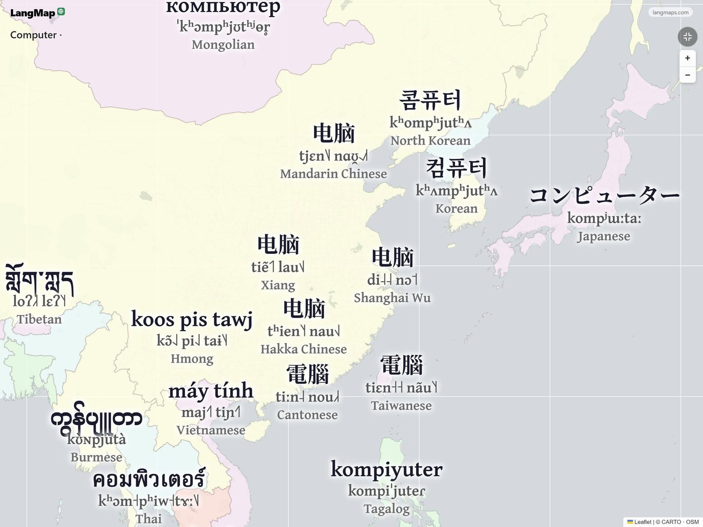

Sinosphere · · revised · Facebook post
What do you call a computer?
- When computers arrived in Asia, many languages simply borrowed the English word computer.
- Others translated what the machine did.
- And a few gave it a completely new metaphor.

Borrow the sound
Japanese:
🇯🇵 コンピューター (konpyūtā)
Korean:
🇰🇷 컴퓨터 (keompyuteo)
The same basic strategy appears elsewhere:
🇹🇭 Thai: คอมพิวเตอร์ (khomphiotoe)
🇮🇩 Indonesian: komputer
🇲🇾 Malay: komputer
🇲🇳 Mongolian: компьютер (komp'yuter)
The map adds more of the same family:
Burmese: ကွန်ပျူတာ
Tagalog: kompiyuter
North Korean: 콤퓨터
Notice the North Korean spelling: 콤 with o, where the South writes 컴 with eo. Even inside one language, the same English word was borrowed in slightly different shapes.
Different scripts, but recognizably the same English word.
Translate the function
Vietnamese chose:
🇻🇳 máy tính (𣛠算)
máy = machine
tính = calculate
Literally:
"calculating machine."
Chinese also has:
🇨🇳 计算机 / 計算機 (jìsuànjī)
Again:
"calculating machine."
This is the more formal, technical word. It is the one you meet in names of university departments and textbooks, while the everyday word is something else.
Invent a metaphor
Everyday Chinese often uses a much more vivid word:
🇨🇳 电脑 / 電腦 (diànnǎo)
电 / 電 = electricity
脑 / 腦 = brain
Literally:
"electric brain."
The same word appears across several Chinese varieties:
Cantonese: 電腦 (din6 nou5)
Taiwanese Hokkien: 電腦 (tiān-náu)
Hakka: 電腦, with its own local pronunciations
Shanghai Wu and Xiang: 电脑, again with local sounds
Same characters.
Different sounds.
Same "electric brain."
Tibetan went in the same direction:
གློག་ཀླད (glog klad)
Again, literally:
"electric brain."
And Hmong shows both strategies side by side. Koos pis tawj is borrowed from English computer, but hlwb hlau is also used: hlwb "brain" + hlau "iron".
An "iron brain."
One last twist
The English word computer originally meant a person who computes, not a machine.
So Vietnamese máy tính and Chinese 计算机 actually preserve the original idea quite clearly:
a machine that calculates.
Meanwhile, the borrowed word computer in Japanese, Korean, Thai and Indonesian carries the name of the old human job, now attached to the machine that replaced it.
Three strategies
One invention.
Three naming strategies:
borrow the sound
translate the function
invent a metaphor
Japanese, Korean, Thai, Indonesian, Malay, Mongolian, Burmese and Tagalog took the sound.
Vietnamese, and formal Chinese, took the function.
Everyday Chinese, from Mandarin to Cantonese, Hokkien, Hakka, Wu and Xiang, took the metaphor, and so did Tibetan.
Hmong kept a foot in two camps.
None of these choices is more correct than the others. Each one simply shows what speakers noticed first when a strange new machine arrived: its foreign name, its job, or the way it seemed to think.
And perhaps the most memorable of all:
"Electric brain."